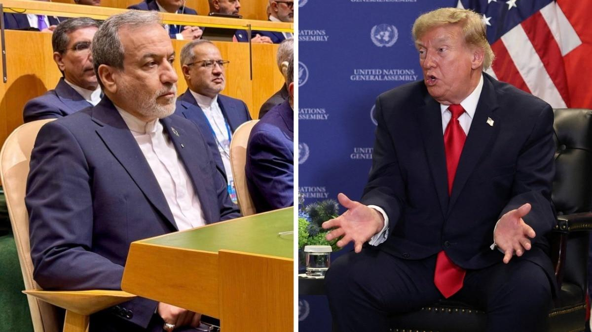
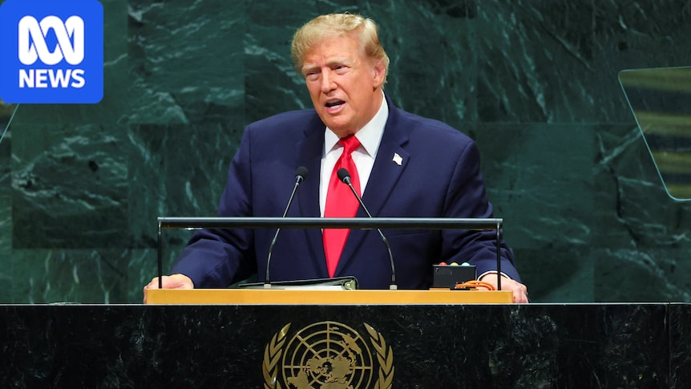

Trump at UN: annihilate Iran or a deal after midterms
22 Sep 2026
CNA / ABC: In his 81st Assembly address Tuesday, Donald Trump defended the Iran war as stopping a nuclear weapon and framed a “big decision”: a rebuild deal after the Nov 3 midterms, or to “annihilate the Islamic Republic” quickly. He urged economic isolation to force talks and rejected any “globalist scheme” to control AI a day after 22 leaders, including Australia’s Albanese, signed a guardrails statement. Bilaterals after the speech included UK PM Andy Burnham, Zelenskyy, Venezuela’s Delcy Rodríguez, Denmark/Greenland, and GCC leaders.
Open CNA · Open ABC

US–Iran hold 3-hour UN sideline meet; Tehran lists Hormuz conditions
22–23 Sep 2026
India Today / Iranian state media: Trump said, with Zelenskyy beside him, that US officials held a three-hour meeting with Iran’s UN delegation — “a good meeting” and “to their advantage to make a deal.” Tehran said Foreign Minister Abbas Araghchi conveyed conditions for reopening the Strait of Hormuz to US Special Envoy Steve Witkoff. No agreement was announced; the war is near the seven-to-eight-month mark with Hormuz still the oil-price hinge into UNGA week.
Open India Today

Zelenskyy presses Trump at UN for energy truce and Patriots
22 Sep 2026
Reuters / wire: Volodymyr Zelenskyy met Trump on the UNGA sidelines to push an energy ceasefire with Russia and winter air-defense support after Ukrainian strikes on Russian refineries and US diesel stress from the Iran/Hormuz squeeze. Zelenskyy has said de-escalation ideas are on the table if Russia stops hitting Ukraine’s energy and food-export routes; Moscow has tied any energy truce to lifting Western energy sanctions. Corridor frame: midterms politics, winter, and how far Washington splits Iran war from Ukraine energy track.
Open Reuters
UNGA general debate week: Iran, Ukraine, Hormuz, AI fight
22–23 Sep 2026
UN / wire: High-level week’s general debate is underway in New York after Trump’s opener. Live tracks: Iran war endgame and Hormuz reopen terms, Ukraine energy/winter package, Gulf security after Houthi/Saudi spillover, and the split over international AI controls. Pezeshkian and other principals are still on the week’s speaker and bilateral slate.
Open UN News
Palace rejects VP blame on Marcos; flags toxic social media for youth
22–23 Sep 2026
Newswav / Manila Times wire: After VP Sara Duterte blamed President Marcos for the Sep 18 Banga National High School shooting (three dead including the shooter, eight wounded), Palace Press Officer Claire Castro said the administration is pursuing multi-agency fixes and rejected the charge. Castro cited harassment and extreme vulgarity normalized online as harming young people’s mental state, and pointed to tighter firearm custody, tougher illegal-gun penalties, and openness to a congressional franchise holding platforms accountable for violent content minors can see. Parent ask ages 7–teens: treat group chats and feeds as a household safety item alongside physical gun access.
Open Newswav
DepEd School Digital Safety Campaign: pilot then nationwide
21 Sep 2026 (live desk)
Tribune / Newsbytes / DepEd: Education Sec. Sonny Angara’s School Digital Safety Campaign for learners, teachers, and parents covers cyberbullying, grooming/OSAEC, scams, privacy, gaming, violent content, screen time, warning signs, and reporting/referral — with age-appropriate learner materials and parent guidance on talking, boundaries, and when to escalate. Pilot in selected schools before nationwide rollout; pairs with Kaagapay parent modules and physical security upgrades after recent school shootings.
Open Tribune
Eala vs Prozorova in Singapore R16; Asian Games next
22–23 Sep 2026
Philstar: World No. 18 Alex Eala, No. 3 seed at the WTA 500 Singapore Tennis Open, faces Russia’s Tatiana Prozorova (No. 180) in the Round of 16 on Wednesday after a first-round bye. Prozorova reached the round with a 5-7, 7-6(2), 6-2 win over Sofia Costoulas. Build-up week before Asian Games tennis in Nagoya (from Sep 27); Eala remains firm on Asiad even with a possible WTA fine for skipping the mandatory China Open.
Open Philstar
Starship Flight 14: NET Sep 28 holds for first orbital try
17–23 Sep 2026
SpaceX / India Today: Public boards still list Flight 14 as early as Monday 28 Sep from Starbase, pending regulatory approval — slipped from the prior Sep 22 aim. Profile remains first orbital attempt (~275 km, ~six orbits over ~10 hours), 26 Starlink V3 satellites, Pacific splashdown west of Chile, Super Heavy Gulf landing. Window often cited ~7:15 a.m. CT.
Open SpaceX